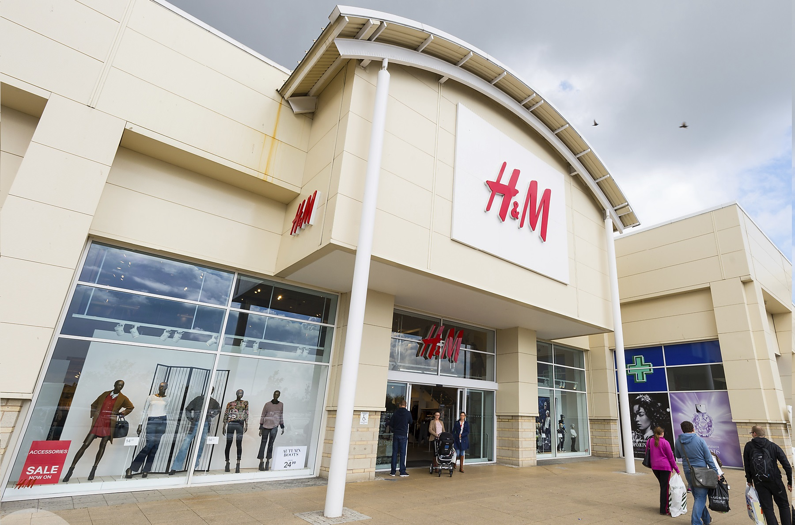
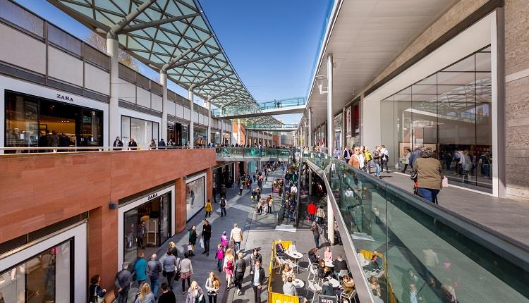
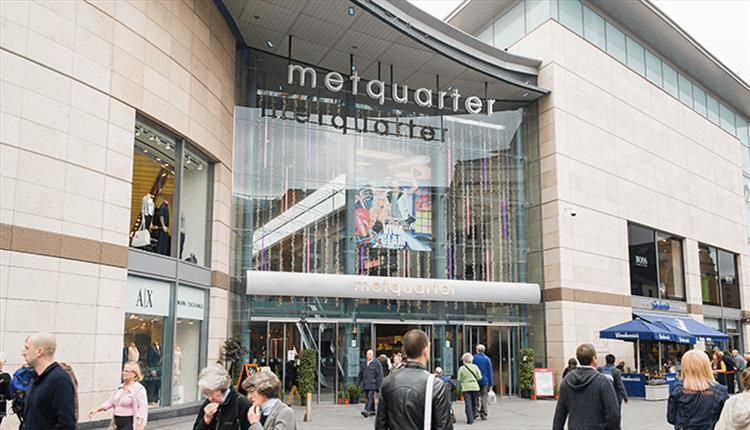
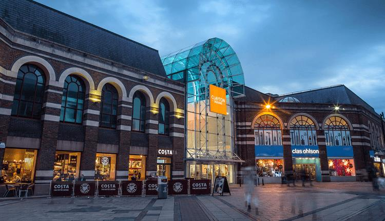
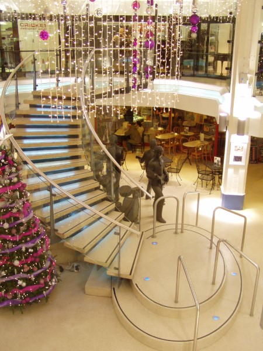
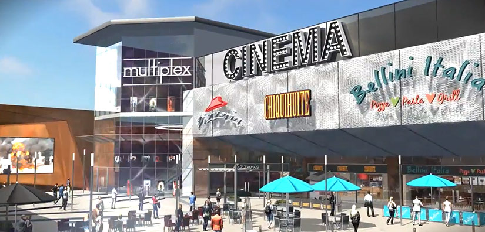

The reccomended shopping malls are some of the best ones in Liverpool
The shopping malls shown are not sorted in any order, as one is as good as the other.
We pay attention to Google rating, types of shops inside, restaurants and cafeterias, etc.





